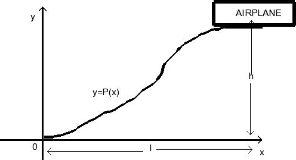

3.Where should a pilot of an aircraft start descent
An approach path for an aircraft ,as shown in the figure,satisfies the following conditions:
The cruising altitude is h when the descent starts at a horizontal distance l from the touchtown at the origin
The pilot maintains an uniform horizontal velocity u through out
The absolute value of the vertical acceleration must not exceed a constant k ,which is less than the acceleration due to gravity.

If the altitude y and the horizontal distance from the origin be x ,then we assume
y=ax3+bx2+cx+d.
The conditions (1)(2)(3) give 6hv2/l2=K
for a given k,v and h,the path and the horizontal distance l can be calculated.